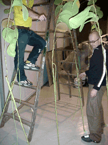

basekamp space > Events
LET'S GET TO WORK
build a place to live - build a relationship -build a future: let's get to work

SATURDAY, NOVEMBER 17 2001
5-7PM OPENING RECEPTION @ UARTS
& BASEKAMP
5:30PM LECTURE IN CBS AUDITORIUM,
UARTS, 333 SOUTH BROAD ST
8-MIDNIGHT AFTERPARTY AT BASEKAMP
The University of the Arts
Rosenwald-Wolf Gallery
333 South Broad Street
Philadelphia, PA 19102
215 717 6480
BASEKAMP
723 Chestnut St, 2nd Fl
Philadelphia, PA 19106
215 592 7288
CURATORS
Gavin Wade • Jonathan VanDyke
ARTISTS
Kathrin Böhm + Stefan Saffer • Aaron Brode •
Steven Brower • Cornford & Cross • Ian Dawson • Jeremy
Deadman • John Wood and Paul Harrison • Oliver Herring • Nina
Katchadourian • Matthew Keough • Atelier van Leishout • Graham
Little • Mark Lombardi • Danica Phelps • Philip Ross •
Albrecht Schäfer • Alyson Shotz • Simon Starling • Julianne
Swartz • Sarah Sze • Austin Thomas • Keith Wilson • Richard
Woods • Elizabeth Wright
DESCRIPTION
Let's
Get to Work is a high-energy project uniting 28 artists and
two artist/curators from Europe, the Middle East, and the United States.
This collective will contribute objects, plans, writings, ideas, and new media
works towards the building of an ideal or (un)ideal city. The initial exhibition
group of 12 British artists was conceived by Gavin Wade and debuted at the
Marcel Sitcoske Gallery in April, 2000. The expanded version, co-curated
by Wade and Jonathan VanDyke, premiered at the Susquehanna Art Museum in July,
2001 and travels to other venues across the US.
Let's Get To Work proposes a city where the artists construct new systems and structures towards a new ecology. The exhibition acts as a developmental stage, pushing the gallery space as open-ended research. Let's Get to Work re-thinks public and private spaces and the nature of human relationships in context of our built environment. The artists utilize concept- and process-oriented methods emphasizing viewer and site. They envision a shift in the design of our culture. Let's Get to Work can be seen as a template for a new city, a microcosm of "a new reality" and a territory for discovery and critique.
The Let's Get to Work exhibition and publication will grow out of a team-oriented approach and emerge as a multi-layered whole. Certain works will overlap, while many will take advantage of under-utilized spaces such as closets, basements, stairways, and the building exterior, establishing new contexts for individual pieces.